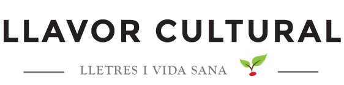

INICI
MANIFEST
Francesc Parcerisas Vázquez: “La traducció és una mica com el teatre, un món de ficció que el lector i l’espectador s’han de creure”
Pau Sanchis Ferrer: “Traduir és triar i quan tries hi ha risc (l’aventura), noves coneixences a l’abast (la curiositat) i basarda (el dubte)”
El soroll i la fúria, William Faulkner (No-res ho és tot)
Núria Mirabet, alimentar-se és acceptar la finitud